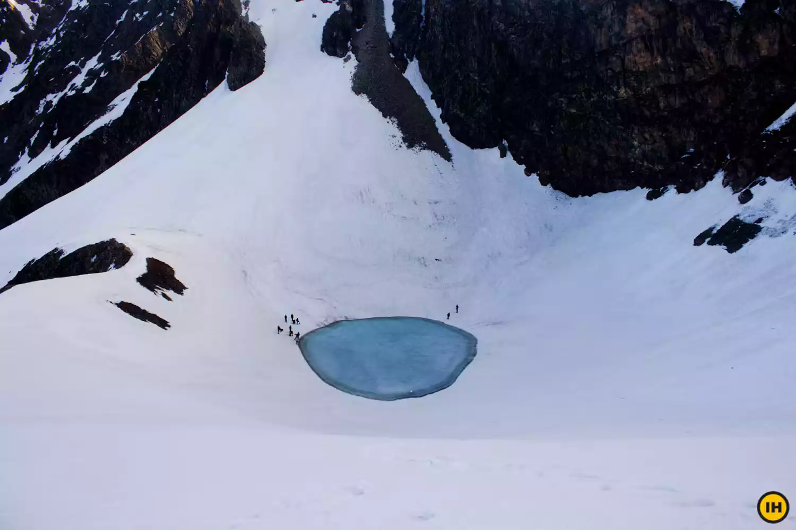
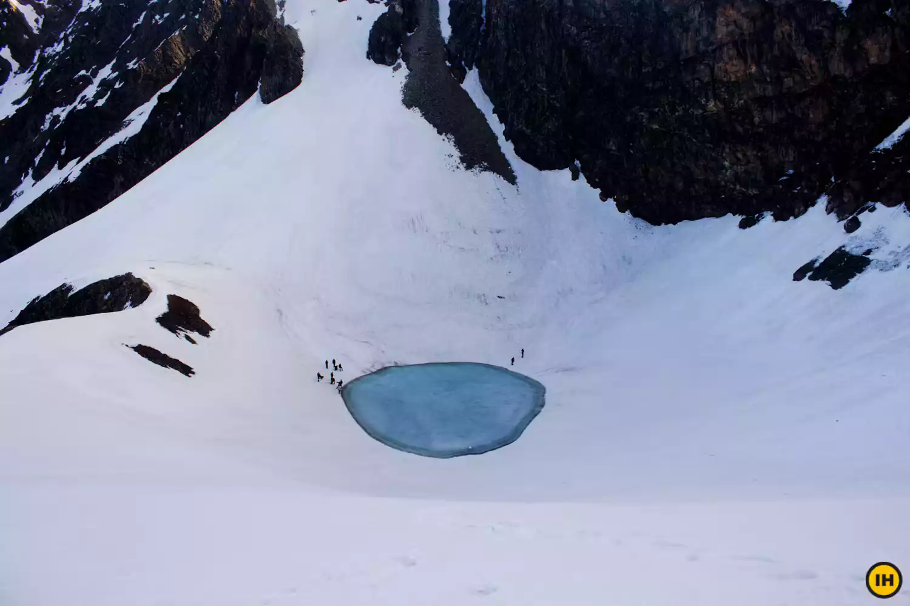

Trek Itinerary
Day 1 (Pick-up Day): Dehradun to Lohajung
Drive distance: 300 km | Drive duration: 10-11 hours
Start your adventure with a scenic drive from Dehradun to Lohajung, the base camp for the Roopkund trek. Enjoy the picturesque views along the way.
Drive distance: 300 km | Drive duration: 10-11 hours
Start your adventure with a scenic drive from Dehradun to Lohajung, the base camp for the Roopkund trek. Enjoy the picturesque views along the way.
Day 2 : Lohargunj to Didna Village
Trek distance: 6.5 km | Trek duration: 4-5 hours
Trek distance: 6.5 km | Trek duration: 4-5 hours
Day 3 : Didna Village to Ali Bugyal
Trek distance: 9 km | Trek duration: 6 hours
Trek distance: 9 km | Trek duration: 6 hours
Day 4 :
Ali Bedni Bugyal to Patar nachuni
Trek distance: 6 km | Trek duration: 4 hours
Trek distance: 6 km | Trek duration: 4 hours
Day 5 :
Patar nachuni to Bhagwa basa via Kaluva Vinayak Temple
Trek distance: 6 km | Trek duration: 5 hours
Trek distance: 6 km | Trek duration: 5 hours
Day 6 :
Bhagwabasa to Roopkund and Back Patar nachauni
Trek distance: 10 km | Trek duration: 8 hours
Trek distance: 10 km | Trek duration: 8 hours
Day 7 :
Patar nachauni to Bedni Bugyal via Gheroli Patal and Wan village
to Lohajung
Trek distance: 15 km | Trek duration: 8 hours
Trek distance: 15 km | Trek duration: 8 hours
Day 8 : Lohajung to Dehradun
Drive distance: 300 km | Drive duration: 10-11 hr
Drive distance: 300 km | Drive duration: 10-11 hr
Trek Photos
 
